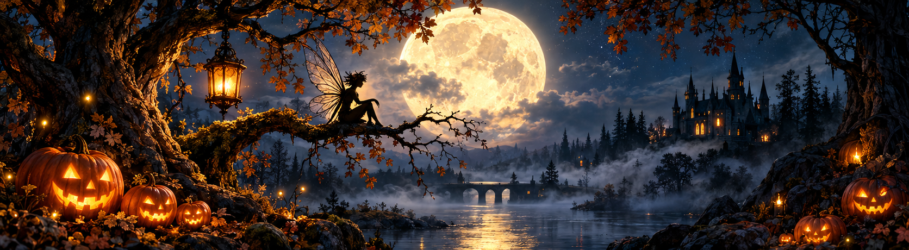

Out I went into the meadow, Where the moon was shining brightly, And the oak-tree’s lengthening shadows On the sloping sward did lean; For I longed to see the goblins, And the dainty-footed fairies, And the gnomes, who dwell in caverns, But come forth on Halloween. “All the spirits, good and evil, Fay and pixie, witch and wizard, On this night will sure be stirring,” Thought I, as I walked along; “And if Puck, the merry wanderer, Or her majesty, Titania, Or that Mab who teases housewives If their housewifery be wrong, Should but condescend to meet me”— But my thoughts took sudden parting, For I saw, a few feet from me, Standing in the moonlight there, A quaint, roguish little figure, And I knew ’twas Puck, the trickster, By the twinkle of his bright eyes Underneath his shaggy hair. Yet I felt no fear of Robin, Salutation brief he uttered, Laughed and touched me on the shoulder, And we lightly walked away; And I found that I was smaller, For the grasses brushed my elbows, And the asters seemed like oak-trees, With their trunks so tall and gray. Swiftly as the wind we traveled, Till we came unto a garden, Bright within a gloomy forest, Like a gem within the mine; And I saw, as we grew nearer, That the flowers so blue and golden Were but little men and women, Who amongst the green did shine. But ’twas marvelous the resemblance Their bright figures bore to blossoms, As they smiled, and danced, and courtesied, Clad in yellow, pink and blue; That fair dame, my eyes were certain, Who among them moved so proudly, Was my moss-rose, while her ear-rings Sparkled like the morning dew. Here, too, danced my pinks and pansies, Smiling, gayly, as they used to When, like beaux bedecked and merry, They disported in the sun; There, with meek eyes, walked a lily, While the violets and snow-drops Tripped it with the lordly tulips: Truant blossoms, every one. Then spoke Robin to me, wondering: “These blithe fairies are the spirits Of the flowers which all the summer Bloom beneath its tender sky; When they feel the frosty fingers Of the autumn closing round them, They forsake their earthborn dwellings, Which to earth return and die, “As befits things which are mortal. But these spirits, who are deathless, Care not for the frosty autumn, Nor the winter long and keen; But, from field, and wood, and garden, When their summer’s tasks are finished, Gather here for dance and music, As of old, on Halloween.” Long, with Puck, I watched the revels, Till the gray light of the morning Dimmed the luster of Orion, Starry sentry overhead; And the fairies, at that warning, Ceased their riot, and the brightness Faded from the lonely forest, And I knew that they had fled. Ah, it ne’er can be forgotten, This strange night I learned the secret— That within each flower a busy Fairy lives and works unseen Seldom is ’t to mortals granted To behold the elves and pixies, To behold the merry spirits, Who come forth on Halloween.
Original Poem Source: Poets.org
Image Credits: Halloween banner and background images created using AI.